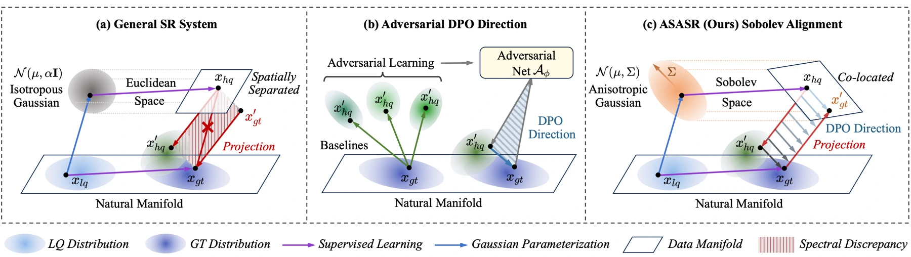
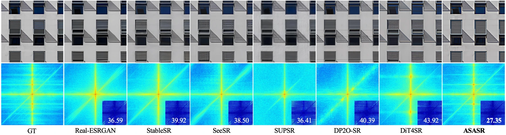

Generative super-resolution is very good at producing detail and not very good at producing detail that belongs to the input. Given a blurred patch it will invent a plausible window frame, a plausible eyelash, a plausible texture — and a perceptual metric will reward it for doing so.
生成式超分辨率非常擅长产出细节，却不擅长产出属于输入的细节。给定一块模糊区域，它会编出看起来合理的窗框、睫毛、纹理——而感知指标会为此给它加分。
The paper’s diagnosis is geometric rather than architectural. Natural images distribute information unevenly across frequency: most of the energy sits in a thin low-frequency band, while high frequencies carry the structure and very little of the energy. An objective built on isotropic Gaussian noise treats every direction in image space as equally important, which is precisely wrong for that distribution.
论文的诊断是几何层面的，而非架构层面的。自然图像在频率上的信息分布并不均匀：大部分能量集中在一个很窄的低频带内，而高频承载结构却只携带极少能量。建立在各向同性高斯噪声之上的目标，把图像空间中的每一个方向都视作同等重要——对这个分布而言，这恰好是错的。
ASASR rebuilds the alignment objective in the geometry the image distribution actually has. The noise transition kernel is coloured to follow natural spectral decay, placing the generative flow in a Sobolev-induced Riemannian metric, and a learned adversary supplies the negative examples. In a study with 50 participants over 64 images it is preferred 91.1% of the time on naturalness and fidelity.
ASASR 按图像分布实际具有的几何重建了对齐目标：对噪声转移核着色以遵循自然频谱衰减，把生成流置于 Sobolev 诱导的黎曼度量中，并由一个可学习的对抗器提供负样本。在 50 名参与者、64 张图像的研究中，其自然度与保真度首选率为 91.1%。
The diagnosis is spectral, not architectural. Isotropic objectives and spectrally flat Gaussian noise weight all frequencies equally, so they cannot distinguish a real high-frequency detail from an invented one.
诊断指向频谱而非架构。各向同性目标与频谱平坦的高斯噪声对所有频率一视同仁，因此无法区分真实高频细节与凭空生成的细节。
ASASR colours the noise transition kernel to mirror natural spectral decay, recasting the generative flow in a Sobolev-induced geometry, and adds an adversary whose negatives are worst-case Sobolev gradients rather than random samples.
ASASR 对噪声转移核着色以贴合自然频谱衰减，把生成流重置于 Sobolev 诱导的几何中，并加入一个以最坏情形 Sobolev 梯度（而非随机样本）作为负样本的对抗器。
91.1% first-choice rate in a 50-participant study over 64 images, with spectral comparisons and downstream detection, segmentation and OCR as structural checks instead of perceptual scores alone.
在 50 名参与者、64 张图像的研究中获得 91.1% 的首选率，并以频谱对比与下游检测、分割、OCR 作为结构性检验，而不只依赖感知分数。
Sobolev geometry, and an adversary that finds the worst directionSobolev 几何与寻找最坏方向的对抗器
Preference optimisation needs a negative example — something to prefer the correct reconstruction over. The standard choice is a sample from the same spectrally flat Gaussian noise used to train the model, and ASASR’s first move is to replace it with noise whose spectrum follows the natural decay of real images.
偏好优化需要一个负样本——用来让正确重建被优先于它。标准做法是从训练模型所用的同一个频谱平坦高斯噪声中采样，而 ASASR 的第一步就是换掉它，改用频谱遵循真实图像自然衰减的噪声。
Concretely, this recasts the generative flow in a Sobolev-induced Riemannian geometry. Distance is no longer measured in flat L2 but with frequency-dependent weights, so a change in a band where natural images carry structure counts for more than an equally large change in a band that carries mostly noise.
具体地说，这把生成流重置于 Sobolev 诱导的黎曼几何之中。距离不再用平坦的 L2 度量，而是带上与频率相关的权重：于是自然图像承载结构的频带上发生变化，其权重高于在主要承载噪声的频带上同等幅度的变化。
The second piece supplies the negatives. Rather than sampling random failures, a parametric adversary grounded in the Riesz representation theorem synthesises examples equivalent to worst-case Sobolev gradients: it searches for the direction in which the current output most violates structure, and alignment is trained against that instead of against noise.
第二部分负责提供负样本。它不随机采样失败样例，而是由一个以 Riesz 表示定理为依据的参数化对抗器，合成等价于最坏情形 Sobolev 梯度的样本：它搜索当前输出最严重违背结构的方向，并对齐训练针对该方向而非噪声进行。


Why geometry rather than a stronger penalty为什么需要换几何，而不是加大惩罚
It is fair to ask why this is not simply a reweighted loss. The difference is where the weighting lives. A penalty applied on top of an isotropic objective still compares two images in a space where all directions are equal; changing the geometry changes the space in which the comparison takes place.
一个合理的追问是：这不就是一个重新加权的损失吗？区别在于权重所处的位置。叠加在各向同性目标之上的惩罚，仍然是在一个所有方向等价的空间里比较两张图像；改变几何，则是改变比较所发生的那个空间。
This matters because the failure mode is asymmetric. Adding a high-frequency detail that is not there and failing to reconstruct one that is may cost the same in L2, but they are not equivalent errors — one is invention, the other is loss. A metric aligned with the image spectrum separates them.
这一点很关键，因为失效模式是不对称的。添加一个本不存在的高频细节，与没能重建出一个本应存在的细节，在 L2 下代价可能相同，但二者并不是等价的错误——一个是编造，一个是丢失。与图像频谱对齐的度量能把它们分开。
The adversary is what makes the objective adversarial rather than merely weighted. Random negatives mostly produce easy examples, perturbations the model already handles, so training against them spends capacity where it buys nothing. Worst-case gradients concentrate the signal on the structural failures that actually occur.
对抗器的作用在于让目标真正具有对抗性，而不只是加权。随机负样本大多产生简单样例——那些模型本来就能应付的扰动——针对它们训练等于把容量花在没有收益的地方。最坏情形梯度则把信号集中到实际会发生的结构性失效上。
Measuring structure, not just preference测量结构，而不只是偏好
Perceptual scores alone cannot establish fidelity, because they are exactly the quantity a generative model can optimise without being faithful. The evaluation therefore asks three separate questions: does the image look natural, does its frequency content match the reference, and does useful semantic content survive restoration.
仅靠感知分数无法确立保真度，因为那恰恰是生成模型可以不必忠实就能优化的指标。因此评测分别提出三个问题：图像看起来是否自然、频率内容是否贴合参考、以及有用的语义内容是否在恢复后得以保留。
The second and third questions are the load-bearing ones. Spectral comparison tests the paper’s actual claim about frequency structure, while downstream detection, segmentation and OCR test whether restored detail still carries information a machine can use — a stricter requirement than looking right to a human.
第二与第三个问题才是承重的。频谱对比检验的正是论文关于频率结构的核心论断；下游检测、分割与 OCR 则检验恢复出的细节是否仍携带机器可用的信息——这比让人看着舒服要严格得多。
Ablations isolate the two contributions by replacing Sobolev guidance with Euclidean guidance and by removing adversarial alignment. That design matters because both components could plausibly improve appearance; only the spectral and downstream measurements can say whether they improved fidelity.
消融通过用欧氏引导替换 Sobolev 引导、以及移除对抗对齐来分离两项贡献。这个设计很关键，因为两个组件都可能改善观感；只有频谱与下游测量能说明它们是否改善了保真度。


Fidelity is not sharpness保真不等于锐利
The headline result is a 91.1% first-choice rate for naturalness and fidelity in a study with 50 participants and 64 test images, alongside improved spectral consistency and downstream task performance. Read together they support one specific claim: alignment in a frequency-aware geometry preserves structure that an isotropic objective loses.
核心结果是：在 50 名参与者、64 张测试图像的研究中，自然度与保真度的首选率为 91.1%，同时频谱一致性与下游任务表现均有改善。合在一起，它们支持的是一个具体论断：在频率感知的几何中做对齐，能保住各向同性目标会丢掉的结构。
The scope is narrower than a general fidelity guarantee. The results hold under the paper’s degradation model and evaluation settings, and a user study of this size establishes preference rather than correctness — participants judge plausibility, and plausibility is the thing generative models fake best.
适用范围比“通用保真保证”要窄。结果成立于论文设定的退化模型与评测条件之下，而这个规模的用户研究确立的是偏好而非正确性——参与者判断的是合理性，而合理性恰恰是生成模型最擅长伪造的东西。
What transfers is the objective-design lesson. If a generative prior is aligned in a metric that ignores the spectrum of the data, it will be rewarded for inventing detail. Making the metric reflect the data distribution is a cheap change with a measurable consequence, and the downstream tasks are the check that keeps it honest.
可以迁移的是目标设计上的教训：如果一个生成先验是在忽略数据频谱的度量中被对齐的，它就会因为编造细节而获得奖励。让度量反映数据分布是一项改动很小的调整，却有可测量的后果；而下游任务正是让它保持诚实的检验。
Paper & authors
Coloring the Noise: Adversarial Sobolev Alignment for Faithful Image Super Resolution
ICML 2026
Cite this work
@misc{wang2026coloringnoiseadversarialsobolev,
title = {Coloring the Noise: Adversarial Sobolev Alignment for Faithful Image Super
Resolution},
author = {Hongbo Wang
and Huaibo Huang
and Pin Wang
and Jinhua Hao
and Chao Zhou
and Ran He},
year = {2026},
eprint = {2605.23264},
archivePrefix = {arXiv},
primaryClass = {cs.CV},
url = {https://arxiv.org/abs/2605.23264}
}